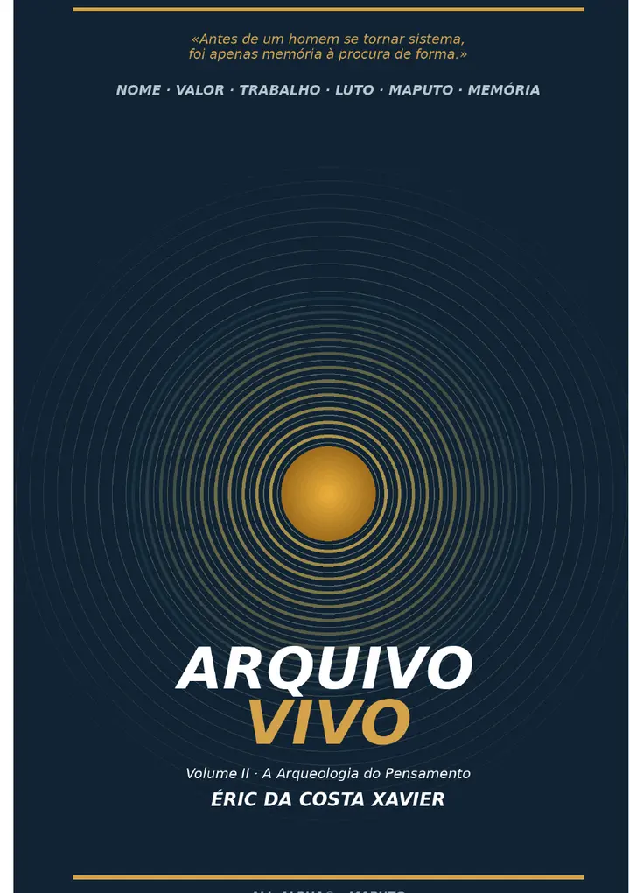

Memória · Ensaio autobiográfico
O Arquivo Vivo — Volume II
A Arqueologia do Pensamento
Dezoito caixas abrem fotografias, notas, mensagens, objectos e memórias. Cada vestígio ajuda a revelar como se formaram ideias sobre nome, valor, trabalho, afectos, reputação e obra.
Leitura online
Abre a primeira caixa.
O leitor incorporado pode variar conforme o navegador. No iPhone, usa “Abrir PDF em ecrã inteiro” se preferires a visualização nativa.
Se o PDF não aparecer, abre a edição directamente.